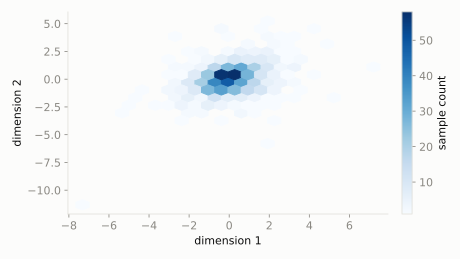

Multivariate extended catalog
Multivariate t
scipy.stats.multivariate_t
Intuition
Multivariate Normal's fatter-tailed cousin: the same idea of several correlated wobbling quantities, but with a higher chance of an occasional extreme joint move in several dimensions at once -- useful whenever 'everything crashes together' matters.
Formula
\[ f(\mathbf{x}) \propto \left(1 + \tfrac{1}{df}(\mathbf{x}-\mu)^T \Sigma^{-1} (\mathbf{x}-\mu)\right)^{-\frac{df+k}{2}} \]
| parameter | default used here | meaning |
|---|
loc | [0, 0] | center point in each dimension |
shape | [[1, 0.3], [0.3, 1]] | spread/correlation matrix |
df | 5 | degrees of freedom (lower = fatter tails) |
Use cases
- Robust portfolio risk modeling (fat-tailed joint asset moves)
- Robust multivariate regression error modeling
A funny example
The dart robot from the Multivariate Normal example, except on rare days its whole arm has a 'bad day' and throws wildly off in both directions together, more often than a calm bell curve would suggest.
How much more/less likely is a joint miss to (1,1) compared to landing exactly on target, versus the calmer Normal version?
Solve it with scipy.stats
import scipy.stats as stats
import numpy as np
dist = stats.multivariate_t(loc=[0, 0], shape=[[1, 0.3], [0.3, 1]], df=5)
print('density at (1,1):', round(float(dist.pdf([1, 1])), 4))
print('density at (0,0):', round(float(dist.pdf([0, 0])), 4))
density at (1,1): 0.0652
density at (0,0): 0.1668

Theoretical shape at the default parameters above (blue = density/PMF, orange = CDF).